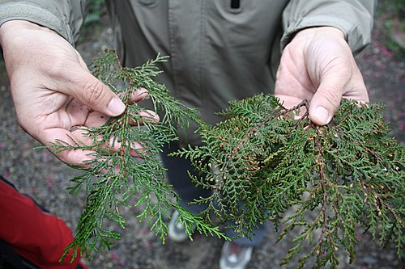
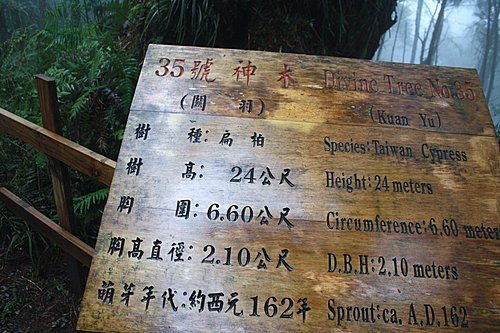
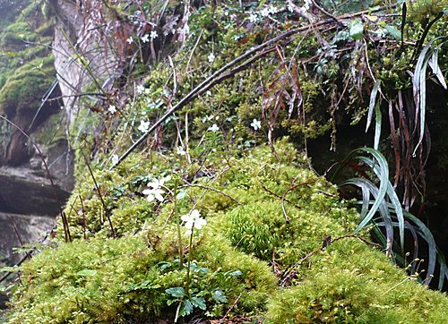

拜訪棲蘭神木園，見識與古聖先賢相當年代的原生神木，神木靜靜地矗立山巔，保護森林。
氤氳山林中綿延不絕的生命力，燃起這樣的啟示：
「認識自己！尊重生命！」
有人說：「土地公造林比人工造林還多！」
雖然人有能力改變自然環境，但終究難以拂逆自然法則。
～～愛護原生物種就是保護地球！～～
【序曲】

本日行程概況：
6:30早餐 →check out，7:30坐遊園車上棲蘭神木園區
→check out，7:30坐遊園車上棲蘭神木園區 →15mins柏油路+30mins蜿蜒山路
→15mins柏油路+30mins蜿蜒山路 →8:30導覽（輕鬆行）→10:50木屋午餐→11:30坐車回明池山莊
→8:30導覽（輕鬆行）→10:50木屋午餐→11:30坐車回明池山莊 →12:15抵明池山莊→12:30沿北橫、羅馬公路原路返回
→12:15抵明池山莊→12:30沿北橫、羅馬公路原路返回 →下午2點多抵新竹
→下午2點多抵新竹 →5點多抵阿蓮(晚餐)→返回溫暖的家
→5點多抵阿蓮(晚餐)→返回溫暖的家
導覽很迅速地帶我們進入神木園區，今天山上霧氣非常重，浪漫極了，但遺憾的是看不見遠方的山和溪，天空中飄起水，溫度約在3至5度之間，所以要走動才不會冷起來。
呼吸森林中清涼的芬多精，讓人十分舒服，經歷前二天的單車洗禮，再來這裡森林浴，真是好～棒～啊～^o^

先說馬告生態公園名稱的緣由，是因山上長了很多「馬告」，導覽說現在看到神木旁光禿禿的植物就是馬告，但我還是不清楚到底是哪一棵…？
馬告是一種辛香料植物「山胡椒」，會在一、二月間開出白色的小花。
【有關神木】
輕鬆走的路線約半圈，為了便於說明這些拍回來很相似的神木照片，就時間先後、按圖索驥配對，約略是這樣子：
從★1號柳宗元開始…★4號歐陽修…★6號孔子…★5號司馬遷…★8號顏真卿…★7號唐太宗…★30號于謙…★31號司馬光…★32號鄭成功…★35號關羽…★45號曹操…★51號袁崇煥
導覽先為我們上一堂課，介紹紅檜與扁柏如何區分：
〔紅檜〕：樹幹喇叭形狀、樹枝微微上揚、樹葉背面有白點、松蘿附生致樹心中空（因此之故，被盜伐機會小）。
〔扁柏〕：樹幹直筒形狀、樹枝微微下擺、樹心結實（故被盜伐機會大）
所以在51棵神木中大都是紅檜。
但紅檜和扁柏會混種，例如扁柏樹身上是紅檜樹皮。
↓左邊是扁柏，右邊是紅檜

★1號柳宗元
另一棵樹上長了好多植物及分支。
★4號歐陽修
★6號孔子，最老的一棵。右邊長了一棵血藤，彷彿是他的學生。

★5號司馬遷，最大的一棵，長樹瘤，一眼可認出。
……
導覽說著前方晴朗時可見蘭陽溪和山脈…今天霧太重，一片白濛濛…
大口森呼吸，令人high起來！
夫妻樹，左邊紅檜，右邊扁柏，時間久了，愈離愈遠，更不幸的，有第三者橫刀奪愛…
莫非想知道三者之間的奧祕？…
再一個笑話，導覽說了半天，只聽笑話，忘了這樹為何倒成這樣，傾倒眾生…
這棵扁柏有紅樹皮
三代同堂：最下層是第一代（長蕨類）、第二代從中間橫長、第三代往上長
★35號關羽

31號司馬光最健康，因最受陽光撫照。
32號鄭成功年紀最小，僅幾百歲。
45號曹操經外國植病醫生救治無效，已經枯死。
★51號袁崇煥
整個公園濕濕冷冷，松蘿和蕨類很喜歡爬到樹上。
導覽深入淺出地引喻有趣事典，我們雖然一時無法完整記載下來，仍對森林內各種植物有很深印象。
【台灣杉與日本柳杉】
台灣杉是國際上登記有案的，非常爭氣，導覽讚不絕口！
但台灣山區絕大部分的樹種是日本柳杉，源自過去日本人砍伐紅檜、扁柏後，從日本引進廣泛種植的樹種。事實上，日本柳杉不太能適應台灣氣候，利用價值亦不如台灣杉。
台灣杉和日本柳杉的相異點：台灣杉樹枝生長整齊、臂挺、針葉尖銳刺手；日本柳杉的樹枝則是交錯生長、臂微垂、針葉不刺手。（如同楓和槭樹不同點：楓葉對生、槭葉則否）─導覽如是說…

〔樹蔭下的生命力〕
整年潮濕低溫造就豐富的植物群，導覽特別介紹幾種植物，如台灣檫樹、七葉一枝花、咬人貓……
↓台灣檫樹是台灣特有原生種，是台灣「國蝶」寬尾鳳蝶唯一的宿主，隨著台灣檫樹逐漸稀少，寬尾鳳蝶瀕臨絕種。
↓七葉一枝花，又稱河車草，有毒，但為蛇傷聖藥。千元鈔票的背面就有這種台灣原生植物。不一定有七片，也有五片或六片。這棵就只有六片，花會從中間長高長出來。
↓這棵植物的花似乎有障眼色，很難發覺，花形像眼鏡蛇，有毒。所以，在山區避免碰觸不認識的植物。
長在山壁上的花
神木身上成花花世界

↓咬人貓，有毒，葉可敷治蛇傷。有毒的部分是各部位的焮毛，解毒的方法可用姑婆芋的葉子搗碎、或尿液敷治解毒（酸鹼中和）。但其嫩枝葉經80℃以上煮熟後即無毒，可食用。
連蜘蛛網都很藝術
從51號袁崇煥神木步道直走往上就是木屋，木屋有三層，下層洗手間、中層餐飲部、上層等車處，窗口沒有玻璃，完全與森林融為一體，在這裡午餐真是太有fu了！
【終曲】
坐遊園車回明池山莊，就是跟馬告說bye-bye的時候了，照原路再九彎十八拐轉回新竹，讓人不禁一路回想來時情景。
～啊！快樂時光總是過得特別快！～
北橫是值得推薦的單車經典路線，是三橫之中最輕鬆的路線，腳力普通如我，大部分路段皆能撐過。而在大漢橋到明池山莊間因為太陡且有多段連續爬坡（依我的程度），有人（包括我在內）選擇坐褓姆車遊賞山上景致，有人選擇撐到底，不論如何，皆是快樂美好如意的事。
當時接近明池山莊的溫度僅5、6度，天空飄雨，只要停止不前便覺冷，所以騎車的好腳，一定要撐到終點，因此我打從心底佩服騎完全程的人，經實地訪問第一名、看不出疲態的貓哥，據稱他每天騎車上班。將騎車當做生活中的一部分，難怪有好體力。
從快樂的經驗中，希望有更多人愛上騎車、愛上台灣的每片土地，讓生活更充實、更健康、更陽光！
(end)